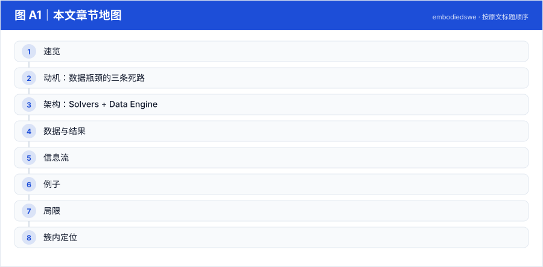
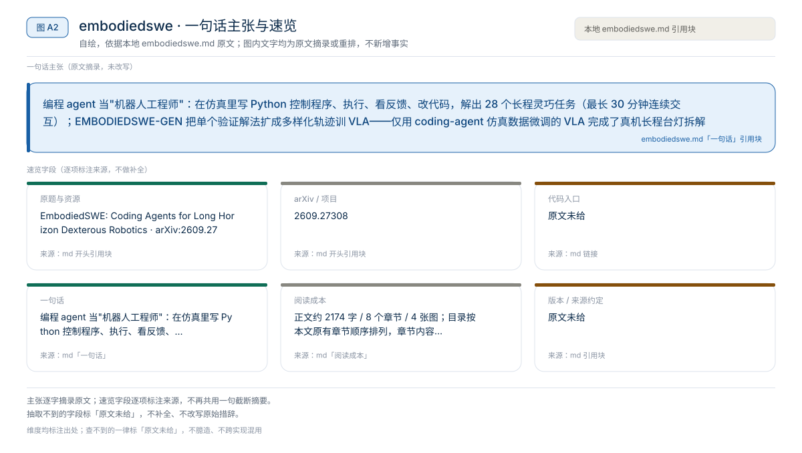
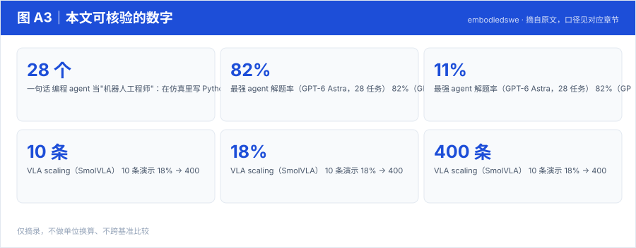
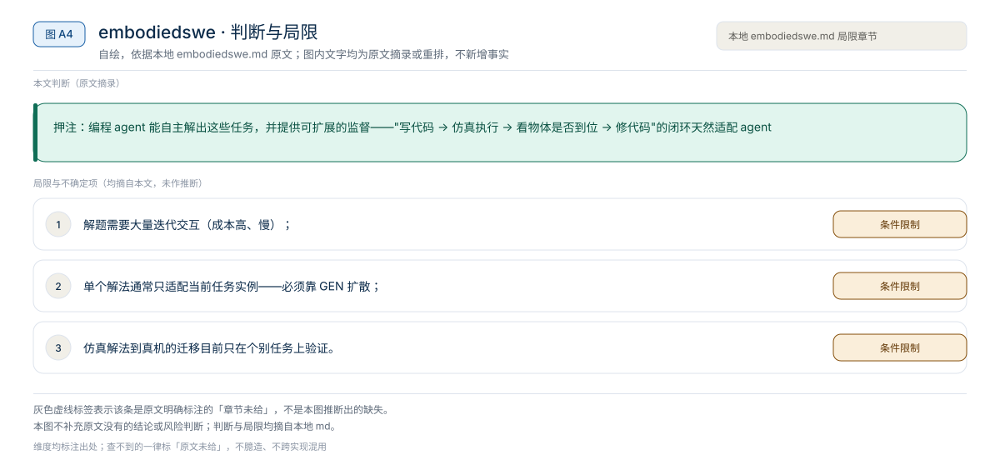

【Harness VLA · 代码即策略与技能发现】RAX 深读：把在线探索做成 Scaling Law，五大基准平均领先 37.4 个点
冻结通用 coding agent 直接连机器人感知/控制接口，把"在线探索"做成 scaling law：成功决策编译成程序、版本化入库，能力随探索预算单调增长
Harness01-代码即策略与技能发现2026
编程 agent 当"机器人工程师"：在仿真里写 Python 控制程序、执行、看反馈、改代码，解出 28 个长程灵巧任务（最长 30 分钟连续交互）；EMBODIEDSWE-GEN 把单个验证解法扩成多样化轨迹训 VLA——仅用 coding-agent 仿真数据微调的 VLA 完成了真机长程台灯拆解
原题与资源：EmbodiedSWE: Coding Agents for Long Horizon Dexterous Robotics · arXiv:2609.27308
一句话：编程 agent 当"机器人工程师"：在仿真里写 Python 控制程序、执行、看反馈、改代码，解出 28 个长程灵巧任务（最长 30 分钟连续交互）；EMBODIEDSWE-GEN 把单个验证解法扩成多样化轨迹训 VLA——仅用 coding-agent 仿真数据微调的 VLA 完成了真机长程台灯拆解
阅读成本：正文约 2174 字 / 8 个章节 / 4 张图；目录按本文原有章节顺序排列，章节内容未改动。
目录（点击跳到对应章节）：

图 A1：本文章节地图（节点即原文 h2 标题）。自绘，依据本文，不新增事实。
| 项 | 内容 |
|---|---|
| 一句话 | 编程 agent 当"机器人工程师"：在仿真里写 Python 控制程序、执行、看反馈、改代码，解出 28 个长程灵巧任务（最长 30 分钟连续交互）；EMBODIEDSWE-GEN 把单个验证解法扩成多样化轨迹训 VLA——仅用 coding-agent 仿真数据微调的 VLA 完成了真机长程台灯拆解 |
| 冻结 | coding agent（GPT-6 Astra / Claude 等）；被训的 VLA 是产出 |
| 演化 | 两层：agent 解题能力（checkpoint 树/CMA-ES 等工具）→ 数据引擎多样化 |
| 基准 | EMBODIEDSWE-BENCH：接触密集 + 可变形物体 + 长程，5 种本体（Franka/xArm7/Kinova G3/Unitree G1…） |

图 A2：一句话主张与速览字段。自绘，依据本文，不新增事实。

图 A3：本文可核验的数字摘录。自绘，依据本文，不新增事实。
一个具体任务走一遍 · 本文可核验数字与字段速查（以下均摘自原文，未作推算）：
A. Coding Agents as Solvers
B. EMBODIEDSWE-GEN（数据引擎，五层多样化）
从单个验证解法扩展：
| 实验 | 数字 |
|---|---|
| 最强 agent 解题率（GPT-6 Astra，28 任务） | 82%（GPT-5.6 Terra 仅 11%——随底座能力 scaling） |
| 解法迁移 | 跨任务 + 跨本体（把旧解当"提示"加速新任务） |
| VLA scaling（SmolVLA） | 10 条演示 18% → 400 条 69% |
| 真机 | 仅用 coding-agent 仿真演示微调的 VLA 完成台灯拆解长程任务（500 条轨迹） |
| 对照 | 编程 agent 显著优于 PPO（即便 PPO 给了专家调的稠密奖励） |
任务 → agent 写控制程序 → 仿真执行 → 日志/图像反馈
→ 失败：checkpoint 回退 / CMA-ES 调参 / 改逻辑 → 验证通过
→ EMBODIEDSWE-GEN 五层多样化 → 大规模轨迹
→ 微调 VLA → 真机长程任务按难度（平均分）： Easy 0.77 ± – → Medium ≈0.55 → Hard 0.32 ± 0.15（Opus 5）；对应 hack rate Easy 0% → Hard 12%（难度越高越容易"作弊"）。
按本体（Opus 5 平均分）： Franka 单臂 0.73 / Franka 双臂 0.19（最难的形态）/ G1 人形 0.75。
VLA 微调数据效率（论文 Table 19，成功率 %，400 demos）： tool_packing 94 · pc_gpu 81 · slice 75 · bulb 75 · nut_thread 62 · coffee 34——编程 Agent 生成的演示可直接微调 VLA，数据量-成功率单调上升。
| 提示条件 | Score | 成功率 |
|---|---|---|
| similar-task hint | 0.60 ±0.05 | 31% |
| dissimilar-task hint | 0.51 ±0.05 | 17% |
| no hint | （更低） | – |
任务间相似性决定经验可迁移性；hack rate 随难度与套件显著波动（Puzzle 17% vs Packing 0%）——评分器可被钻空子是长程灵巧操作评测的真问题。
双臂装 IKEA 桌：agent 先写"左臂扶稳桌腿、右臂拧螺栓"的程序，执行发现螺栓滑丝 → checkpoint 回退到对齐状态 → CMA-ES 把对齐容差调紧 → 通过；GEN 引擎换 5 种桌面材质、3 种螺栓初始位姿、打乱左右臂分工，扩出上千条轨迹训 VLA。
本文判断：押注：编程 agent 能自主解出这些任务，并提供可扩展的监督——"写代码 → 仿真执行 → 看物体是否到位 → 修代码"的闭环天然适配 agent
局限与不确定项（以下均摘自本文，未作推断）：

图 A4：局限与不确定项摘录。自绘，依据本文，不新增事实。
覆盖范围：本页新增的导读、目录、章节地图、数字卡与局限清单，均为原文信息的重排或摘录；正文、数据与实验结论未改动。